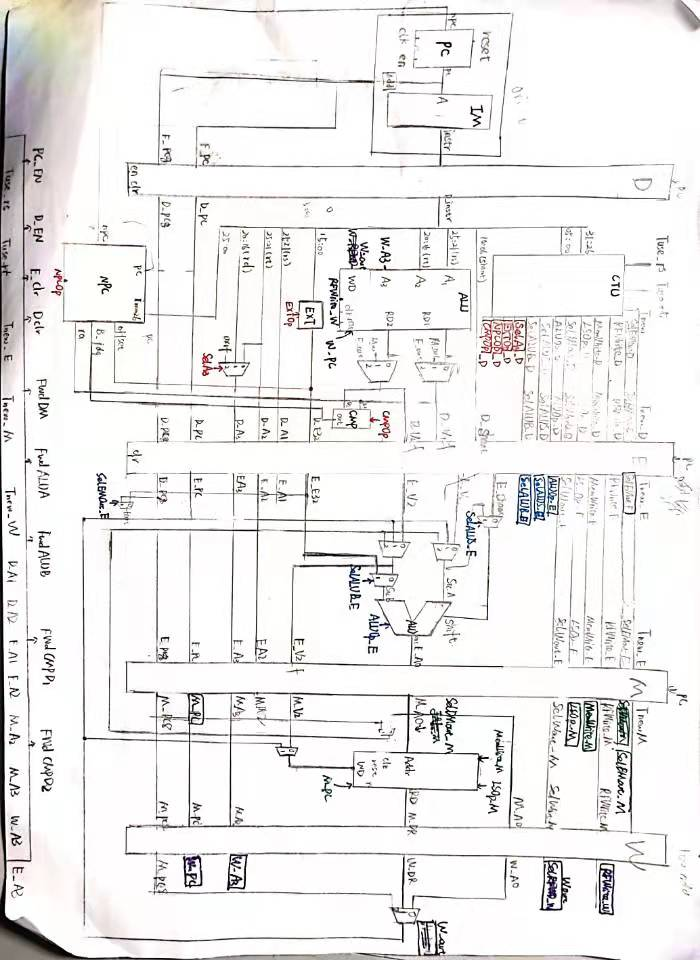

流水线CPU设计方案
设计概述
本文所设计的CPU为Verilog实现的流水线MIPS架构CPU，该CPU支持43条MIPS汇编指令，为了实现该功能，笔者设计了IFU，GRF，NPC，CMP，EXT，ALU，DM，D_Reg，E_Reg，M_Reg，W_Reg，MCU， HCU 等关键模块。整个搭建过程通过自下而上的方式完成——先根据应实现的指令对功能部件进行设计与搭建，然后对各个功能部件进行连接，形成完整的数据通路。
实现指令说明
我们将本CPU实现的指令分为以下几类：
-
calc_R: addu, subu, and, or, nor, xor, slt, sltu
-
calc_I: addiu, andi, ori, xori, slti, sltiu
-
shift: sll, sra, srl
-
shiftv: sllv, srav, srlv
-
load: lw, lh, lhu, lb, lbu
-
store: sw, sh, sb
-
B类：beq， bne
-
J类：jal, j
-
特殊：jr, lui
工程模块定义
功能模块定义
IFU（取指令单元）
该模块内部包含PC（程序计数器）和IM（指令存储器）。IM的容量为16KB(32bit/word×4096word)， 可以根据PC的值从IM取出对应的指令，并具有同步复位的功能。
-
端口定义
信号名 方向 位宽 描述 clk I 1 时钟信号 reset I 1 异步复位信号 en I 1 使能信号(stall信号取反) npc I 32 下一条要被执行的指令的地址 pc O 32 输出当前正在执行的指令的地址 instr O 32 输出当前正在执行的指令 pc8 O 32 pc+8 -
功能定义
序号 功能名称 功能描述 1 复位 当reset信号有效时，将PC寄存器中的值置为0x00003000 2 停止 当en信号失效时，PC寄存器忽略时钟输入，PC当前值保持不变 3 写PC寄存器 当en信号失效且时钟上升沿来临时，将下一条指令的地址（next PC）写入PC寄存器 4 取指令 根据当前pc的值从IM（指令存储器）中读出对应的指令到instr端口
GRF（通用寄存器组）
该模块内部包含32个具有写使能32位寄存器，分别对应MIPS架构中$0 ~ $31通用寄存器（其中0号寄存器中的值恒为0，即不具备写使能，因此为了实现该机制，我们不再设置0号寄存器，每次对0进行特判）。GRF可以实现同步复位，同时可以根据输入的5位地址（0~31）向寄存器堆存取数据，实现定向访存寄存器。
为了实现内部转发，我们将当前WD中输入的数据（但没有写入）实时反映到RD1和RD2端口上，用来解决数据冲突。
-
端口定义
信号名 方向 位宽 描述 clk I 1 时钟信号 pc I 32 输出当前正在执行的 reset I 1 同步复位信号
1：复位信号有效
0：复位信号无效A1 I 5 地址输入信号，指定32个寄存器中的一个，将其中的数据读出到RD1 A2 I 5 地址输入信号，指定32个寄存器中的一个，将其中的数据读出到RD2 A3 I 5 地址输入信号，指定32个寄存器中的一个，将其作为写入目标 WD I 32 数据输入信号 WE I 1 写使能信号
1：写入有效
0：写入失效RD1 O 32 输出A1指定的寄存器中的32位数据 RD2 O 32 输出A2指定的寄存器中的32位数据 -
功能定义
序号 功能名称 功能描述 1 复位 reset信号有效时，所有寄存器中储存的值均被清零 2 读数据 读出A1，A2地址对应的寄存器中储存的数据，将其加载到RD1和RD2 3 写数据 当WE信号有效且时钟上升沿来临时，将WD中的数据写入到A3地址对应的寄存器
NPC（下一指令计算单元）
该模块根据当前指令地址和其他控制信号（NPCOp），计算出下一指令所在的地址。
-
端口定义
信号名 方向 位宽 描述 F_pc I 32 F级指令地址 D_pc I 32 D级指令地址 offset I 32 地址偏移量，用于计算B类指令所要跳转的地址 imm26 I 26 当前指令数据的前26位（0~25），用于计算jal和j指令所要跳转的地址 ra I 32 储存在寄存器（$ra或是jalr指令中存储“PC+4”的寄存器）中的地址数据，用于实现jr和jalr指令 judge I 1 B类指令判断结果
1：说明当前B类指令的判断结果为真
0：说明判断结果为假NPCOp I 3 NPC功能选择
0x000：顺序执行
0x001：B类指令分支地址
0x010: jal/j跳转地址
0x011: jr跳转地址npc O 32 输出下一指令地址
EXT（扩展单元）
该模块对16位立即数进行扩展，可以实现符号扩展，0扩展和加载高位（lui）操作。
-
端口定义
信号名 方向 位宽 描述 in I 16 16位立即数 EXTOp I 2 EXT功能选择信号
0x000: 0扩展
0x001: 符号扩展
0x010: 加载到高位（lui指令使用）out O 32 扩展结果
CMP(B类指令比较单元)
该单元根据输入的CMPOp信号对当前B指令的类型进行判断，进而对当前输入的数值进行相应比较，最后输出结果。
-
端口定义
信号名 方向 位宽 描述 D1 I 32 输入CMP单元的第一个数据 D1 I 32 输入CMP单元的第二个数据 CMPOp I 3 CMPOp功能选择信号
0x000：beq判断
0x001：bne判断
0x010：blez判断
0x011: bgtz判断out O 1 判断结果输出
1: 判断结果为真
0：判断结果为假
ALU（逻辑运算单元）
该模块可实现加，减，按位与，按位或等11种运算，并根据ALUOP信号的值在这些功能中进行选择。除此之外，该模块还可以实现溢出判断。
-
端口定义
信号名 方向 位宽 描述 ALUOp I 4 ALU功能选择信号 src_A I 32 参与ALU计算的第一个值 src_B I 32 参与ALU计算的第二个值S shamt I 5 移位数输入 out O 32 输出ALU计算结果 -
功能定义
序号 功能名称 ALU_Op 功能描述 1 加 0b0000 ALU_Result = Src_A + Src_B 2 减 0b0001 ALU_Result = Src_A - Src_B 3 按位与 0b0010 ALU_Result = Src_A & Src_B 4 按位或 0b0011 ALU_Result = Src_A | Src_B 5 按位异或 0b0100 ALU_Result = Src_A ⊕ Src_B 6 按位或非 0b0101 ALU_Result = ~(Src_A | Src_B) 7 逻辑左移 0b0110 ALU_Result = Src_B << Shift 8 逻辑右移 0b0111 ALU_Result = Src_B >> Shift 9 算术右移 0b1000 ALU_Result = Src_B >>> Shift 10 带符号比较 0b1001 ALU_Result = (Src_A > Src_B) ? 1 : 0（带符号比较） 11 无符号比较 0b1010 ALU_Result = (Src_A > Src_B) ? 1 : 0（无符号比较）
DM （数据存储器）
该模块对数据进行访存，容量为容量为 12KB(32bit/word×3072word),不仅可以实现对字的访问和存储，还可以实现对半字和字节的操作。
-
端口定义
信号名 方向 位宽 描述 pc I 32 当前指令地址 clk I 1 时钟信号 reset I 1 异步复位信号 A I 5 地址输入信号，指向数据储存器中某个存储单元 WD I 32 数据输入信号 WE I 1 写使能信号
1：写入有效
0：写入失效LSOp I 3 DM访存功能选择信号
0x000：lw
0x001：lh
0x010：lhu
0x011：lb
0x100：lbu
0x101：sw
0x110：sh
0x111：sbRD O 32 输出A指定的存储单元中的32位数据 -
功能定义
序号 功能名称 功能描述 1 复位 reset信号有效时，所有寄存器中储存的值均被清零 2 读数据 读出A地址对应的存储单元中的数据，将其加载到RD 3 写数据 当WE信号有效且时钟上升沿来临时，将WD中的数据写入到A地址对应的存储单元
流水寄存器模块定义
D_Reg（IF/ID流水寄存器）
-
端口定义
方向 信号名 位宽 描述 输入来源 I clk 1 时钟信号 mips.v中的clk I reset 1 同步复位信号 mips.v中的reset I en 1 D级寄存器使能信号 HCU中stall信号取反 I clr 1 D级寄存器清空信号 默认为1‘b0 I F_instr 32 F级instr输入 IFU_instr I F_pc 32 F级pc输入 IFU_pc I F_pc8 32 F级pc8输入 IFU_pc + 8 O D_instr 32 D级instr输出 O D_pc 32 D级pc输出 O D_pc8 32 D级pc8输出
E_Reg（ID/EX流水寄存器）
-
端口定义
方向 信号名 位宽 描述 输入来源 I clk 1 时钟信号 mips.v中的clk I reset 1 同步复位信号 mips.v中的reset I clr 1 E级寄存器清空信号 HCU中stall信号 I D_instr_s 5 移位指令的位移数 D_instr的s域数据 I D_V1 32 D级V1输入 通过MUX_CMP_D1选择的数据 I D_V2 32 D级V2输入 通过MUX_CMP_D1选择的数据 I D_A1 5 D级A1输入 D_instr的rs域数据 I D_A2 5 D级A2输入 D_instr的rt域数据 I D_A3 5 D级A3输入 通过MUX_A3选择出的数据 I D_E32 32 D级E32输入 通过EXT模块扩展出的数据 I D_pc 32 D级pc输入 前一级相同信号 I D_pc8 32 D级pc输入 前一级相同信号 I Tnew_D 2 D级指令的Tnew输入 前一级相同信号 I RFWrite_D 1 D级控制信号输入 前一级相同信号 I MemWrite_D 1 D级控制信号输入 前一级相同信号 I SelEMOut_D 1 D级控制信号输入 前一级相同信号 I SelWOut_D 1 D级控制信号输入 前一级相同信号 I SelALUS_D 1 D级控制信号输入 前一级相同信号 I SelALUB_D 1 D级控制信号输入 前一级相同信号 I LSOp_D 3 D级控制信号输入 前一级相同信号 I ALUOp_D 4 D级控制信号输入 前一级相同信号 O E_instr_s 5 移位指令的位移数 O E_V1 32 E级V1输出 O E_V2 32 E级V2输出 O E_A1 5 E级A1输出 O E_A2 5 E级A2输出 O E_A3 5 E级A3输出 O E_E32 32 E级E32输出 O E_pc 32 E级pc输出 O E_pc8 32 E级pc输出 O Tew_E 2 E级指令的Tnew输出 O RFWrite_E 1 E级控制信号输出 O MemWrite_E 1 E级控制信号输出 O SelEMOut_E 1 E级控制信号输出（使用） O SelWOut_E 1 E级控制信号输出 O SelALUS_E 1 E级控制信号输出（使用） O SelALUB_E 1 E级控制信号输出（使用） O LSOp_E 3 E级控制信号输出（使用） O ALUOp_E 4 E级控制信号输出 -
运算功能
$Tnew_E = (Tnew_D > 0) ? Tnew_D - 1: 0$
M_Reg（EX/MEM流水寄存器）
-
端口定义
方向 信号名 位宽 描述 输入来源 I clk 1 时钟信号 mips.v中的clk I reset 1 同步复位信号 mips.v中的reset I E_AO 32 E级AO输入 ALU_out数据 I E_V2 32 E级V2输入 MUX_ALU选择出来的数据 I E_A2 32 E级A2输入 前一级相同信号 I E_A3 5 E级A3输入 前一级相同信号 I E_pc 32 E级pc输入 前一级相同信号 I E_pc8 32 E级pc8输入 前一级相同信号 I Tnew_E 2 E级Tnew输入 前一级相同信号 I SelEMOut_E 1 D级控制信号输入 前一级相同信号 I SelWOut_E 1 D级控制信号输入 前一级相同信号 I RFWrite_E 1 D级控制信号输入 前一级相同信号 I MemWrite_E 1 D级控制信号输入 前一级相同信号 I LSOp_E 3 D级控制信号输入 前一级相同信号 O M_AO 32 M级AO输出 O M_V2 32 M级V2输出 O M_A2 32 M级A2输出 O M_A3 5 M级A3输出 O M_pc 32 M级pc输出 O M_pc8 32 M级pc8输出 O Tnew_M 2 M级Tnew输出 O SelEMOut_M 1 D级控制信号输出（使用） O SelWOut_M 1 D级控制信号输出 O RFWrite_M 1 D级控制信号输出 O MemWrite_M 1 D级控制信号输出（使用） O LSOp_M 3 D级控制信号输出（使用） -
运算功能
$Tnew_M = (Tnew_E > 0) ? Tnew_E - 1: 0$
W_Reg（MEM/WB流水寄存器）
-
接口定义
方向 信号名 位宽 描述 输入来源 I clk 1 时钟信号 mips.v中的clk I reset 1 同步复位信号 mips.v中的reset I M_AO 32 M级AO输入 前一级相同信号 I M_DR 32 M级DR输入 前一级相同信号 I M_A3 5 M级A3输入 前一级相同信号 I M_pc 32 M级pc输入 前一级相同信号 I M_pc8 32 M级pc8输入 前一级相同信号 I RFWrite_M 1 M级控制信号输入 前一级相同信号 I SelWOut_M 2 M级控制信号输入 前一级相同信号 O W_AO 32 W级AO输出 O W_DR 32 W级DR输出 O W_A3 5 W级A3输出 O W_pc 32 W级pc输出 O W_pc8 32 W级pc8输出 O RFWrite_W 1 W级控制信号输出（使用） O SelWOut_W 2 W级控制信号输出（使用）
控制模块定义
MCU（主控制器模块）
在主控制模块中，我们对指令中Opcode域和Funct域中的数据进行解码，输出ALUOp,MemtoReg等19条控制指令，从而对数据通路进行调整，满足不同指令的需求。为实现该模块，我们又在内部设计了两个子模块——和逻辑（AND Logic）和或逻辑（OR Logic）。前者的功能是识别，将输入的Opcode和Funct数据识别为对应的指令，后者的功能是生成，根据输入指令的不同产生不同的控制信号。
-
输入端口定义
信号名 方向 位宽 描述 opcode I 6 输入D_instr_opcode域数据 funt I 6 输入D_instr_funct域数据 -
输出端口（控制信号）定义
信号名 位宽 作用级 描述 相关指令 RFWrite 1 W GRF写使能信号 MemWrite 1 M DM写入使能信号 store型：sw, sb, sh SelA3 2 D 对MUX_A3的输出进行选择 SelEMOut 1 E、M 对MUX_E_out和MUX_M_out的输出进行选择 jr SelWOut 2 W 对MUX_W_out的输出进行选择 SelALUB 1 E 对MUX_ALU_B的输出进行选择 SelALUS 1 E 对MUX_ALU_S的输出进行选择 shift型、shiftv型 NPCOp 3 D NPC模块功能选择信号 CMPOp 3 D CMP模块功能选择信号 EXTOp 2 D EXT模块功能选择信号 LSOp 3 M DM模块功能选择信号 ALUOp 4 E ALU模块功能选择信号 -
注：该模块中的“Sel”型信号均作用于功能MUX
HCU（冒险控制器模块）
在冒险控制模块中，我们通过对传入的**“A”（A1，A2，A3）和“T”**（Tnew，Tuse）进行分析，判断当前需要进行转发（forward）还是暂停（stall），并通过组合逻辑生成相应控制信号。
-
输入端口定义
信号名 方向 位宽 描述 D_A1 I 5 D级A1输入 D_A2 I 5 D级A2输入 E_A1 I 5 E级A1输入 E_A2 I 5 E级A2输入 M_A2 I 5 M级A2输入 E_A3 I 5 E级A3输入 M_A3 I 5 M级A3输入 W_A3 I 5 W级A3输入 Tuse_rs I 2 D级MCU中输出的Tuse_rs信号 Tuse_rt I 2 D级MCU中输出的Tuse_rt信号 Tnew_E I 2 E级Tnew_E信号输入 Tnew_M I 2 M级Tnew_M信号输入 Tnew_W I 2 W级Tnew_W信号输入 -
输出端口（控制信号）定义
信号名 位宽 作用级 描述 FwdCMPD1 2 D 对HMUX_CMP_D1的输出进行选择 FwdCMPD2 2 D 对HMUX_CMP_D2的输出进行选择 FwdALUA 2 E 对HMUX_ALU_A的输出进行选择 FwdALUB 2 E 对HMUX_ALU_B的输出进行选择 FwdDM 1 M 对HMUX_DM的输出进行选择 stall 1 F、D、M 暂停信号 -
注：该模块中的“Fwd”型信号均作用于转发MUX
-
注：该模块中的stall信号同时作用与IFU，D_Reg，E_Reg
选择器模块
功能MUX
| MUX名 | 选择数量 | 描述 | 输出信号名 | 控制信号 |
|---|---|---|---|---|
| MUX_A3 | 3 | D级中A3输入信号进行选择 0：D_instr_rt 1：D_instr_rd 2：0x1f |
D_A3 | SelA3 |
| MUX_ALU_B | 2 | 对E级ALU模块src_B接口的信号进行选择 0：E_V2_f 1：E_E32 |
ALU_B | SelALUB |
| MUX_ALU_S | 2 | 对E级ALU模块src_S接口的信号进行选择 0：E_instr_s 1：E_V1_f |
ALU_S | SelALUS |
| MUX_E_out | 2 | 对E级储存的计算结果进行选择 0：E_32 1：E_pc8 |
E_out | SelEMOut |
| MUX_M_out | 2 | 对M级储存的计算结果进行选择 0：M_AO 1：M_pc8 |
M_out | SelEMOut |
| MUX_W_out | 3 | 对W级储存的计算结果进行选择 0：W_AO 1：W_DR 2：W_pc8 |
W_out | SelWOut |
转发MUX
| MUX名 | 选择数量 | 描述 | 输出信号名 | 控制信号 |
|---|---|---|---|---|
| HMUX_CMP_D1 | 3 | 将数据转发到CMP_D1接口 0：GRF_RD1 1：M_out 2：E_out |
D_V1_f | FwdCMPD1 |
| HMUX_CMP_D2 | 3 | 将数据转发到CMP_D2接口 0：GRF_RD2 1：M_out 2：E_out |
D_V2_f | FwdCMPD2 |
| HMUX_ALU_A | 3 | 将数据转发到ALU_A接口 0：E_V1 1：W_out 2：M_out |
E_V1_f | FwdALUA |
| HMUX_ALU_B | 3 | 将数据转发到ALU_B接口 0：E_V2 1：W_out 2：M_out |
E_V2_f | FwdALUB |
| HMUX_DM | 2 | 将数据转发到DM_WD接口 0：M_V2 1：W_out |
M_V1_f | FwdDM |
重要机制实现方法
分支转移实现
B类指令
为了减少因控制冲突导致的暂停（stall），我们将B类指令的判断进行前置，单独使用CMP模块进行判断。当B类指令进入D级后（此时F级的指令为编译优化调度的指令），CMP模块的判断结果进入NPC，如过CMP结果为真（CMP_out = 1）而且NPCOp信号为0x001（说明当前指令为B类指令），NPC输出转移的地址npc并进入IFU的输入端，在下一时钟沿上升时进入F级，实现转移。
j和jal
当j或jal进入D级后（此时F级的指令为编译优化调度的指令），D_instr中imm26域的数据进入NPC进行处理，如果当前NPCOp信号为0x010（说明当前指令为jal或j指令），NPC输出转移的地址npc，并进入IFU的输入端，在下一时钟沿上升时进入F级，实现转移。
jal指令在实现跳转的同时，还需要将下一条指令的地址存入31号寄存器中，因此我们需要在IFU中计算出改地址，并随着jal指令进行流水，最终在W级写入GRF的31号寄存器。由于存在延迟槽，pc+4地址中的指令是编译优化机制调度过来的，因此我们要保存的地址应该为pc+8。
jr
当jr进入D级后（此时F级的指令为编译优化调度的指令），D_V1_f（经过转发后的D_V1值）进入NPC，如果当前NPCOp信号为0x011（说明当前指令为jr指令），NPC输出转移的地址npc，并进入IFU的输入端，在下一时钟沿上升时进入F级，实现转移。
冒险处理
冒险处理我们均通过“A_T”法实现——
转发（forward）
当前面的指令要写寄存器但还未写入，而后面的指令需要用到没有被写入的值时，这时候会产生数据冒险，我们首先考虑进行转发。我们假设所有的数据冒险均可通过转发解决。也就是说，当某一指令前进到必须使用某一寄存器的值的流水阶段时，这个寄存器的值一定已经产生，并存储于后续某个流水线寄存器中。
在这一阶段，我们不管需要的值有没由计算出，都要进行转发，即暴力转发。为实现这一机制，我们要清楚哪些模块需要转发后的数据（需求者）和保存着写入值的流水寄存器（供应者）
-
供应者及其产生的数据
流水级 产生数据 MUX名&选择信号名 MUX输出名 E E_E32，E_pc8 MUX_E_out & SelEMOut E_out M M_AO，M_pc8 MUX_M_out & SelEMOut M_out W W_AO，W_RD，W_pc8 MUX_W_out & SelWOut W_out -
需求者及其产生的数据
接收端口 选择数据 HMUX名&选择信号名 MUX输出名 CMP_D1/NPC_ra D_V1，M_out，E_out HMUX_CMP_D1 & FwdCMPD1 D_V1_f CMP_D2 D_v1，M_out，E_out HMUX_CMP_D2 & FwdCMPD2 D_V2_f ALU_A E_V1， W_out，M_out HMUX_ALU_A & FwdALUA E_V1_f ALU_B E_V2，W_out，M_out HMUX_ALU_B & FwdALUB E_V1_f DM_WD M_V2， W_out HMUX_DM & FwdDM M_V2_f
从上表可以看出，W级中的数据没有转发到D级，原因是我们在GRF内实现了内部转发机制，将GRF输入端的数据（还未写入）及时反映到RD1或这RD2，判断条件为A3 == A2 或者A3 == A1。
此时为了生成HMUX的选择信号，我们需要向HCU（冒险控制器）输入”A”数据，然后进行选择信号的计算，执行转发的条件为——
- 前位点的读取寄存器地址和某转发输入来源的写入寄存器地址相等且不为 0
- 写使能信号有效
根据以上条件我们可以生成上面的5个HMUX选择信号，选择信号的输出值应遵循“就近原则”，及最先产生的数据最先被转发。
暂停（stall）
接下来，我们来处理通过转发不能处理的数据冒险。在这种情况下，新的数据还未来得及产生。我们只能暂停流水线，等待新的数据产生。为了方便处理，我们仅仅为D级的指令进行暂停处理。
我们把Tuse和Tnew作为暂停的判断依据——
- Tuse：指令进入 D 级后，其后的某个功能部件再经过多少时钟周期就必须要使用寄存器值。对于有两个操作数的指令，其每个操作数的 Tuse 值可能不等（如 store 型指令 rs、rt 的 Tuse 分别为 1 和 2 ）。
- Tnew：位于 E 级及其后各级的指令，再经过多少周期就能够产生要写入寄存器的结果。在我们目前的 CPU 中，W 级的指令Tnew 恒为 0；对于同一条指令，Tnew@M = max(Tnew@E - 1, 0)
在这一阶段，我们找到D级生成的Tuse_rs和Tuse_rt和在E,M,W级寄存器中流水的Tnew_D，Tnew_M，Tnew_W，如下表所示
-
Tuse表
指令类型 Tuse_rs Tuse_rt calc_R 1 1 calc_I 1 X shift X 1 shiftv 1 1 load 1 X store 1 2 branch 0 0 jump X X jr 0 X -
Tnew表
指令类型 Tnew_D Tnew_E Tnew_M Tnew_W calc_R 2 1 0 0 calc_I 2 1 0 0 shift 2 1 0 0 shiftv 2 1 0 0 load 3 2 1 0 store X X X X branch X X X X jal 0 0 0 0 jr X X X X lui 1 0 0 0
然后我们Tnew和Tuse传入HCU（冒险控制器中），然后进行stall信号的计算。如果Tnew > TuseHCU中的stall信号值为1，此时执行以下操作——
- 冻结PC寄存器（IFU_en = ~stall = 0）
- 冻结D级寄存器（D_en = ~stall = 0）
- 清空E级寄存器（E_clr = stall = 1）
测试方案
典型测试样例
运算指令测试
该部分测试通过随机数随机生成，以保证测试数据的任意性，然后与同学代码进行对拍，以确定正确性。（随机生成程序与对拍程序均由同学设计）
其中一组测试数据如下所示
li $0 1856279938
li $1 1934446801
li $2 -1722438048
li $3 -1916920114
li $4 661049635
li $5 -1673451598
li $6 494171713
li $7 1395838457
li $7 0
li $4 0
li $3 0
subu $6, $6, $4
sltu $3, $1, $5
slt $7, $6, $6
xor $0, $5, $1
xor $4, $6, $1
xor $2, $1, $2
subu $0, $6, $5
addu $1, $0, $0
slt $3, $4, $0
sltu $2, $3, $2
srav $7, $6, $6
xor $5, $1, $1
xor $7, $3, $0
sltu $1, $6, $5
sltu $1, $7, $1
srlv $5, $7, $1
slt $6, $0, $7
subu $2, $0, $7
srav $7, $5, $6
sllv $1, $3, $3
andi $1, $4, 4839
lui $0,50410
lui $7,37950
slti $7, $1, -27385
sltiu $5, $3, 25736
xori $0, $3, 21063
addiu $0, $6, -13980
sltiu $0, $6, -3696
andi $1, $0, -9134
xori $3, $4, -6255
andi $4, $2, 16257
andi $0, $3, -11820
slti $7, $7, 27643
sltiu $1, $3, -28474
addiu $2, $5, 27095
slti $4, $3, 28162
slti $7, $7, -21601
sltiu $2, $2, 8945
ori $6, $4, 6182
andi $5, $0, 50
sw $2, 2248($0)
lbu $2, 1490($0)
sb $4, 2357($0)
lw $5, 304($0)
lb $3, 797($0)
lhu $2, 3380($0)
sw $4, 2036($0)
lhu $3, 3090($0)
lw $6, 2144($0)
lh $0, 1386($0)
sh $0, 1450($0)
lh $3, 178($0)
sw $1, 2184($0)
lh $7, 3686($0)
lh $3, 784($0)
lb $1, 1856($0)
lhu $7, 2054($0)
sh $5, 2672($0)
lbu $3, 144($0)
lhu $6, 1898($0)
sll $0, $4, 0
srl $0, $3, 2
sll $4, $2, 5
sll $4, $1, 7
sra $2, $3, 7
sra $6, $3, 3
sra $0, $5, 6
srl $1, $6, 6
sll $4, $7, 4
srl $5, $6, 6
sll $0, $2, 2
sll $5, $5, 1
sra $2, $7, 5
sra $5, $6, 7
sll $2, $5, 2
srl $2, $5, 0
sra $7, $7, 6
sra $7, $0, 4
sra $7, $1, 5
sra $6, $3, 5
li $2 0
li $3 0
li $5 0
b_test_1_one:
bne $5, $6, b_test_1_one_then
or $5, $1, $5
b_test_1_two:
beq $4, $4, b_test_1_two_then
lui $1,33465
jal_test_1:
jal jal_test_1_then
lui $5,28752
end_1:
srav $6, $2, $4
xori $5, $5, -4086
sb $4, 1959($0)
sll $6, $1, 5
……………………………………………………
b_test_10_one:
bne $6, $3, b_test_10_one_then
sllv $4, $7, $7
b_test_10_two:
blez $4, b_test_10_two_then
addiu $7, $4, 24630
jal_test_10:
jal jal_test_10_then
andi $5, $1, -2262
end_10:
and $0, $0, $3
sltiu $1, $5, -10971
lhu $5, 3654($0)
srl $6, $0, 6
j final
//
b_test_1_one_then:
nor $2, $3, $7
ori $6, $7, 25634
sw $7, 3824($0)
srl $1, $6, 2
j b_test_1_two
and $6, $5, $7
b_test_1_two_then:
or $0, $2, $5
andi $5, $3, -31499
sw $4, 2876($0)
sll $2, $0, 6
jal jal_test_1
addu $1, $ra, $0
jal_test_1_then:
sllv $5, $7, $4
sltiu $3, $4, 21590
lh $6, 3136($0)
sra $2, $3, 2
addiu $ra,$ra, 8
blez $2, end_1
sllv $5, $5, $0
ori $0, $3, 28484
lb $0, 1030($0)
sll $7, $2, 7
jr $ra
…………………………………………
b_test_10_one_then:
sltu $6, $7, $7
addiu $6, $7, 3346
sh $2, 2950($0)
srl $1, $3, 1
j b_test_10_two
slt $4, $7, $2
b_test_10_two_then:
xor $2, $4, $7
slti $6, $2, -16048
lh $4, 146($0)
sra $0, $7, 6
jal jal_test_10
addu $1, $ra, $0
jal_test_10_then:
srav $0, $5, $5
lui $6,58558
lbu $2, 3162($0)
sll $1, $7, 2
addiu $ra,$ra, 8
bgtz $7, end_10
or $4, $0, $5
addiu $3, $4, 16811
lb $4, 4069($0)
sll $6, $2, 0
jr $ra
final:
nop
转移指令（B类和J类）测试
main:
li $s0, 0
li $s1, -1000
li $s2, 1000
lui $s3, 0x8000 #s3 is -2147483648
lui $s4, 0x8000
ori $s4, 0x0001 #s4 is -2147483647
lui $s5, 0x7fff
ori $s5, 0xffff #s5 is 2147483647
lui $s6, 0x7fff
ori $s6, 0xfffe #s6 is 2147483646
beq_1: beq $s0, $s0, beq_1_test
nop
beq_2: beq $s1, $s1, beq_2_test
nop
……
beq_10: beq $s5, $s6, beq_10_test
nop
beq_end:
bne_1: bne $s0, $s1, bne_1_test
nop
……
bne_10: bne $s3, $s3, bne_10_test
nop
bne_end:
blez_1: blez $s0, blez_1_test
nop
……
blez_10: blez $s6, blez_10_test
nop
blez_end:
bgtz_1: bgtz $s2,bgtz_1_test
nop
……
bgtz_10: bgtz $s1,bgtz_10_test
nop
bgtz_end:
jal_1: jal jal_1_test
nop
……
jal_5: jal jal_5_test
nop
jal_end:
sw $t0, 0($s0)
sw $t1, 0($s0)
sw $t2, 0($s0)
sw $t3, 0($s0)
sw $t4, 0($s0)
sw $t5, 0($s0)
li $v0, 10
syscall
beq_1_test: addi $t0,$t0, 1
j beq_2
nop
……
beq_10_test: addi $t0,$t0, 1
j beq_end
nop
bne_1_test: addi $t1,$t1, 1
j bne_2
nop
……
bne_10_test:addi $t1,$t1, 1
j bne_end
nop
blez_1_test: addi $t2,$t2, 1
j blez_2
nop
……
blez_10_test: addi $t2,$t2, 1
j blez_end
nop
bgtz_1_test: addi $t3,$t3 1
j bgtz_2
nop
……
bgtz_10_test: addi $t3,$t3 1
j bgtz_end
nop
jal_1_test: addi $t4, $4, 1
jr $ra
nop
……
jal_5_test: addi $t4, $4, 1
jr $ra
nop
jalr_1_test: addi $t5, $t5, 1
jr $v1
nop
……
jalr_5_test: addi $t5, $t5, 1
jr $v1
nop访存指令测试
.text
li $s0, 0xABCF1234
li $s1, 0x1234ABCD
li $s2, 0xa1b2c3d4
li $s3, 0x7fff0000
sb $s1, 100($0)
sb $s2, 103($0)
sb $s3, 105($0)
sb $s4, 107($0)
sh $s4, 108($0)
sh $s3, 110($0)
sh $s2, 112($0)
sh $s1, 114($0)
sw $s0, 0($0)
sw $s1, 4($0)
sw $s2, 8($0)
sw $s3, 12($0)
lw $t0, 0($0)
lw $t1, 4($0)
lw $t2, 8($0)
lw $t3, 12($0)
sw $t0, 16($0)
sw $t1, 20($0)
sw $t2, 24($0)
sw $t3, 28($0)
lb $t0, 3($0)
lb $t1, 7($0)
lb $t2, 11($0)
lb $t3, 13($0)
sw $t0, 32($0)
sw $t1, 36($0)
sw $t2, 40($0)
sw $t3, 44($0)
lbu $t0, 3($0)
lbu $t1, 7($0)
lbu $t2, 11($0)
lbu $t3, 13($0)
sw $t0, 48($0)
sw $t1, 52($0)
sw $t2, 56($0)
sw $t3, 60($0)
lh $t0, 2($0)
lh $t0, 4($0)
lh $t0, 8($0)
lh $t0, 12($0)
sw $t0, 64($0)
sw $t1, 68($0)
sw $t2, 72($0)
sw $t3, 76($0)
lhu $t0, 2($0)
lhu $t0, 6($0)
lhu $t0, 8($0)
lhu $t0, 12($0)
sw $t0, 80($0)
sw $t1, 84($0)
sw $t2, 88($0)
sw $t3, 92($0)
li $v0, 10
syscall自动测试工具
-
测试代码生成工具（python）
import random list_R = ["addu", "subu", "and", "or", "nor", "xor", "sltu", "slt", "sllv", "srlv", "srav"] list_I = ["andi", "addiu", "ori", "xori", "lui", "slti", "sltiu"] list_LS = ["lw", "sw", "lh", "lhu", "sh", "lb", "lbu", "sb"] list_shift = ["sll", "srl", "sra"] list_B = ["bne", "beq"] def R_test(file, n): for i in range(n): k = random.randint(0, 10000000) % len(list_R) rs = random.randint(0, 10000000) % 8; rt = random.randint(0, 10000000) % 8; rd = random.randint(0, 10000000) % 8; s = "{} ${}, ${}, ${}\n".format(list_R[k], rd, rs, rt) file.write(s) def I_test(file, n): for i in range(n): k = random.randint(0, 10000000) % len(list_I) rs = random.randint(0, 10000000) % 8 rt = random.randint(0, 10000000) % 8 imm = random.randint(-32768, 32768) abs_imm = random.randint(0, 65536) if list_I[k] == "lui": s = "{} ${},{}\n".format(list_I[k], rt, abs_imm) else: s = "{} ${}, ${}, {}\n".format(list_I[k], rt, rs, imm) file.write(s) def LS_test(file, n): for i in range(n): k = random.randint(0,10000000) % len(list_LS) ins = list_LS[k] num = 0 if(ins[1] == "w"): num = (random.randint(0,10000000) << 2) % 4096 elif(ins[1] == "h"): num = (random.randint(0,10000000) << 1) % 4096 else: num = (random.randint(0,10000000)) % 4096 rt = random.randint(0, 10000000) % 8 s = "{} ${}, {}($0)\n".format(ins, rt, num) file.write(s) def shift_test(file, n): for i in range(n): k = random.randint(0,10000000) % len(list_shift) shamt = random.randint(0, 10000000) % 8 rd = random.randint(0, 10000000) % 8 rt = random.randint(0, 10000000) % 8 s = "{} ${}, ${}, {}\n".format(list_shift[k], rd, rt, shamt) file.write(s) def B_test(file, lable): k = random.randint(0,10000000) % len(list_B) if(k == 0 or k == 1): rs = random.randint(0, 10000000) % 8 rt = random.randint(0, 10000000) % 8 s = "{} ${}, ${}, {}\n".format(list_B[k], rs, rt, lable) file.write(s) else: rs = random.randint(0, 10000000) % 8 s = "{} ${}, {}\n".format(list_B[k], rs, str(lable)) file.write(s) def b_begin(file, n): file.write("\nb_test_{}_one:\n".format(n)) B_test(file, "b_test_{}_one_then".format(n)) R_test(file,1) file.write("b_test_{}_two:\n".format(n)) B_test(file, "b_test_{}_two_then".format(n)) I_test(file,1) file.write("jal_test_{}:\n".format(n)) file.write("jal jal_test_{}_then\n".format(n)) I_test(file,1) file.write("end_{}:\n\n".format(n)) R_test(file, 1) I_test(file, 1) LS_test(file, 1) shift_test(file, 1) def b_end(file, n): file.write("\nb_test_{}_one_then:\n".format(n)) R_test(file, 1) I_test(file, 1) LS_test(file, 1) shift_test(file, 1) file.write("j b_test_{}_two\n".format(n)) R_test(file, 1) file.write("\nb_test_{}_two_then:\n".format(n)) R_test(file, 1) I_test(file, 1) LS_test(file, 1) shift_test(file, 1) file.write("jal jal_test_{}\n".format(n)) file.write("addu $1, $ra, $0\n") file.write("\njal_test_{}_then:\n".format(n)) R_test(file, 1) I_test(file, 1) LS_test(file, 1) shift_test(file, 1) file.write("addiu $ra,$ra, 8\n".format(n)) B_test(file, "end_{}".format(n)) R_test(file, 1) I_test(file, 1) LS_test(file, 1) shift_test(file, 1) file.write("jr $ra\n".format(n)) with open("mips_code.asm", "w") as file: for i in range(8): temp = random.randint(-2147483648, 2147483648) s = "li ${} {}\n".format(i, temp) file.write(s) index = random.randint(0,10000000) % 8 file.write("li ${} 0\n".format(index)) index = random.randint(0,10000000) % 8 file.write("li ${} 0\n".format(index)) index = random.randint(0,10000000) % 8 file.write("li ${} 0\n".format(index)) R_test(file, 20) I_test(file, 20) LS_test(file, 20) shift_test(file, 20) file.write("\n") index = random.randint(0,10000000) % 8 file.write("li ${} 0\n".format(index)) index = random.randint(0,10000000) % 8 file.write("li ${} 0\n".format(index)) index = random.randint(0,10000000) % 8 file.write("li ${} 0\n".format(index)) for i in range(10): b_begin(file, i+1) file.write("j final\n") for i in range(10): b_end(file, 1+i) file.write("final:\n") - 自动测试工具（python） 在使用前，我们需要将下方r_road和xilinx_path中输入工程文件夹路径和ISE路径。在终端运行这个代码（test.py）后，首先需要输入测试次数，对于每一次测试，我们运行一次代码自动生成工具（generate_2.py）,生成MIPS代码（mips_code.asm）,然后会启动mars和ISE分别获得标准输出和测试输出，最后进行文本比较。如果出现错误，会自动生成错误日志文件，显示错误行数和相应mips机器码、标准输出、测试输出。如果想要对自己写的MIPS代码进行测试，只需要将第100行注释掉，运行次数填写为1即可。 ```python import os import shutil p_road = "D:\\Code\\Verilog\\homework_code\\P5_cpu_test" run_time = "20us" xilinx_path = "E:\\Xilinx\\14.7\\ISE_DS\\ISE" error = [] def run_mars(): print("编译并运行MIPS文件……") os.system("java -jar mars.jar db mc CompactDataAtZero a dump .text HexText code.txt nc mips_code.asm") os.system("java -jar mars.jar db mc CompactDataAtZero nc mips_code.asm > mips_out.txt") def load_hex_code(): list_temp = [] with open("code.txt", "r+") as hex_code: list_temp = hex_code.readlines() with open(p_road + "\\code.txt", "w") as file_to_IM: file_to_IM.writelines(list_temp) hex_code.close() file_to_IM.close() def run_ise(): print("编译并运行Verilog文件……") file_list = [] for i, j ,k in os.walk(p_road): for file in k: if file.endswith(".v"): file_list.append(file) with open(p_road + "\\mips.prj", "w") as prj: for i in range(len(file_list)): prj.write("Verilog work \"" + p_road + "\\" + file_list[i] + "\"\n") with open(p_road + "\mips.tcl", "w") as tcl: tcl.write("run " + run_time +";\nexit") prj.close() tcl.close() os.environ["XILINX"] = xilinx_path os.system(xilinx_path + "\\bin\\nt64\\fuse -nodebug -prj " + p_road + "\\mips.prj -o mips.exe mips_tb > compile_log.txt") os.system("mips.exe -nolog -tclbatch " + p_road + "\\mips.tcl> verilog_out.txt") # print("mips.exe -nolog -tclbatch " + p_road + "\\mips.tcl > verilog_out.txt") def copy_file(name, target_road): f_1 = open(name, "r") list_temp = f_1.readlines() f_2 = open(target_road + "\\" + name, "w") f_2.writelines(list_temp) f_1.close() f_2.close() def file_cmp(order): with open("mips_out.txt", "r") as out_1: out_std = out_1.readlines() out_std.remove('\n') out_1.close() with open("verilog_out.txt", "r+") as out_2: out_test = out_2.readlines()[5:] # out_2.truncate() # out_2.writelines(out_test) out_2.close() flag = 0 with open(".\\log.txt", "w") as log: if(len(out_std) > len(out_test)): flag = 1 log.write("Too few output! Expected output-lines is {}\nBut your output-lines is {}\n\n".format(len(out_std), len(out_test))) else: for i in range(len(out_std)): if(out_std[i] != out_test[i][out_test[i].index("@"): ]): flag = 1; log.write("Error in line {}\nExpected output is \"{}\"\nBut your outout is \"{}\"\n\n".format(i, out_std[i], out_test[i])) log.close() if(flag): print("测试结果: Failed!") os.makedirs(".\\test_log_file\\log_{}\\".format(order)) copy_file("log.txt", ".\\test_log_file\\log_{}".format(order)) copy_file("mips_code.asm", ".\\test_log_file\\log_{}".format(order)) copy_file("mips_out.txt", ".\\test_log_file\\log_{}".format(order)) copy_file("verilog_out.txt", ".\\test_log_file\\log_{}".format(order)) else: print("测试结果: Accepted!") test_times =int(input("请输入测试次数：")) print("错误日志文件夹已创建！") if os.path.exists(".\\test_log_file"): shutil.rmtree(".\\test_log_file") print("测试开始！\n") for i in range(1,test_times + 1): os.system("python generate_2.py") print("\n测试进度: {}/{}".format(i, test_times)) run_mars() load_hex_code() run_ise() file_cmp(i)
思考题
流水线冒险
-
在采用本节所述的控制冒险处理方式下，PC 的值应当如何被更新？请从数据通路和控制信号两方面进行说明。
A：当需要进行暂停时，IFU的使能信号失效，PC值不变。当不需要进行分支转移和跳转时，NPC中将F_pc信号加4处理返回IFU，下一时钟沿来临时更新为F_pc+4。当执行分支指令时，NPC将D_pc +4和符号扩展后的imm16相加，返回IFU，下一时钟沿上升时更新。当执行j/jal指令时，NPC将imm26进行扩展（前四位补D_pc的前四位，后两位补0），返回IFU，下一时钟沿上升时更新。当执行jr指令时，NPC将从GRF的RD1端口（考虑转发）输出的值输出，返回IFU下一时钟沿上升时更新。
-
对于 jal 等需要将指令地址写入寄存器的指令，为什么需要回写 PC+8 ？
A：因为需要考虑编译优化，jal的下一条指令是延迟槽中的指令，在jal执行前会被执行。如果回写PC+4的话，当出现“jr $ra”时，将会回到延迟槽，重复执行延迟槽中的指令。因此需要回写PC+8。
数据冒险的分析
-
为什么所有的供给者都是存储了上一级传来的各种数据的流水级寄存器，而不是由 ALU 或者 DM 等部件来提供数据？
A：因为流水寄存器中的储存的数据时前一级已经计算出来的数据，在当前周期内时稳定输出的。而功能部件的输出是有延迟的，如果让这些部件提供数据，有可能再其在回写数据生成前就写入了错误的数据，导致数据波动。
AT 法处理流水线数据冒险
-
“转发（旁路）机制的构造”中的 Thinking 1-4；
Thinking 1：如果不采用已经转发过的数据，而采用上一级中的原始数据，会出现怎样的问题？试列举指令序列说明这个问题。
A：例如：
$s0, $0, 4 andi $s1, $s0, 5 sw $s1, 4($s0)Thinking 2：我们为什么要对 GPR 采用内部转发机制？如果不采用内部转发机制，我们要怎样才能解决这种情况下的转发需求呢？
A：因为需要使得W级保存的将要写入得数据及时反馈到GRF的输出端口，从而规避数据冒险。如果不采用内部转发，我们可以在GRF的输出端口加入多路选择器，将W级的数据进行转发。
Thinking 3：为什么 0 号寄存器需要特殊处理？
A：因为对0号寄存器的写入是无效的，如果不特殊处理，则会使得向0号寄存器写入的数据（无效输入）被错误转发，从而造成BUG。
Thinking 4：什么是“最新产生的数据”？
A: 距离当前需求者最近的流水寄存器中储存的数据。
-
在 AT 方法讨论转发条件的时候，只提到了“供给者需求者的A相同，且不为 0”，但在 CPU 写入 GRF 的时候，是有一个 we 信号来控制是否要写入的。为何在 AT 方法中不需要特判 we 呢？为了用且仅用 A 和 T 完成转发，在翻译出 A 的时候，要结合 we 做什么操作呢？
A： 因为当we信号为0时我们就把RF写入地址置为0，因此如果“供给者的A不为0”，就已经排除了“写入信号为0”的情况。
在线测试相关说明
在本实验中你遇到了哪些不同指令类型组合产生的冲突？你又是如何解决的？相应的测试样例是什么样的？
如果你是手动构造的样例，请说明构造策略，说明你的测试程序如何保证覆盖了所有需要测试的情况；如果你是完全随机生成的测试样例，请思考完全随机的测试程序有何不足之处；如果你在生成测试样例时采用了特殊的策略，比如构造连续数据冒险序列，请你描述一下你使用的策略如何结合了随机性达到强测的效果。
此思考题请同学们结合自己测试 CPU 使用的具体手段，按照自己的实际情况进行回答。
A：我是采用半随机生成半手动构造的方法。对于功能型指令，完全通过python脚本自动生成。并且为了提高数据冲突的概率，我们仅仅使用0~7号寄存器进行测试。对于跳转指令，我们先使用一定模板进行构建，然后为了增加数据冒险和控制冒险，我们又手动进行一定修改，使得测试样例尽可能更多的覆盖所有可能的情况
附录

